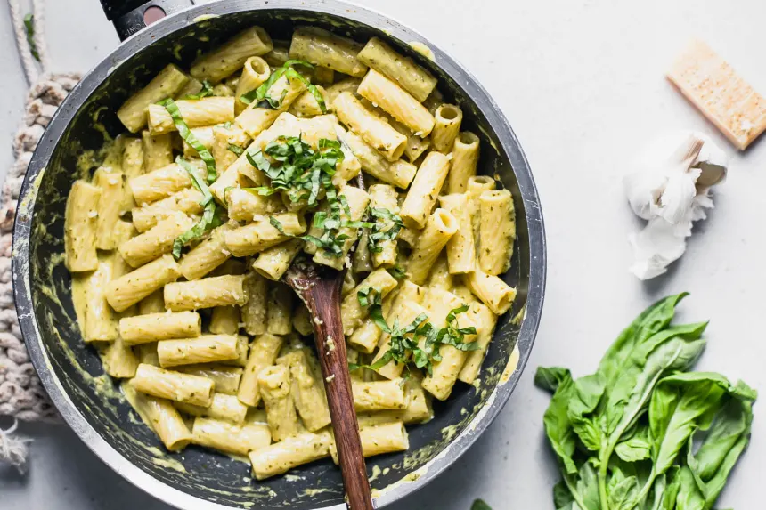

Pesto Cream Sauce

Serve this amazing sauce over pasta and add some protein, such as chicken, if you wish!
- 3/4 cup heavy whipping cream
- 1/4 cup water
- 2 tablespon butter
- 1/4 cup prepated pesto sauce
- 1/8 teaspoon garlic powder
- 1/4 teaspoon salt
- 1/3 cup parmesan cheese, shredded or flakes (your preference!)